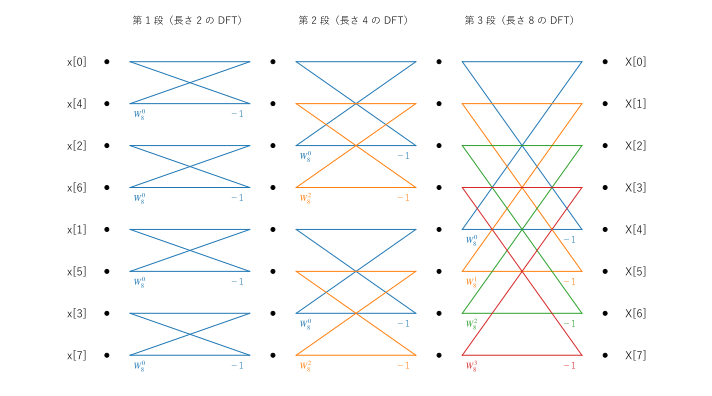
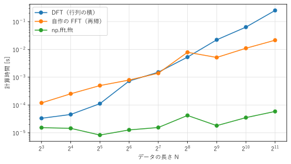

第 7 章 高速フーリエ変換
DFT を定義どおりに計算すると、データの長さ \(N\) の 2 乗に比例する計算量が必要になる。 FFT（fast Fourier transform、高速フーリエ変換）は、DFT と同じ結果を、\(N \log_2 N\) に比例する計算量で求めるアルゴリズムである。FFT の発見により、DFT は実用的な道具になった。この章では、最も基本的な FFT である基数 2 の Cooley-Tukey 法を説明し、NumPy の FFT 関数の使い方をまとめる。
DFT の計算量
DFT の式 (24) では、1 つの \(X[k]\) を求めるのに \(N\) 回の複素数の掛け算が必要であり、\(N\) 個の \(X[k]\) をすべて求めるには \(N^2\) 回の掛け算が必要である。\(N = 2^{20} \approx 10^6\)（標本化周波数 44.1 kHz の音声で約 24 秒）なら、約 \(10^{12}\) 回になる。1 秒間に \(10^9\) 回の掛け算ができる計算機でも、約 17 分かかる。
FFT を使うと、この計算が約 \(10^7\) 回の掛け算で済み、1 秒もかからない。FFT のアイデアはガウスにまでさかのぼるが、1965 年にクーリー（J. W. Cooley）とテューキー（J. W. Tukey）が計算機向けのアルゴリズムとして発表し、広く使われるようになった。
Cooley-Tukey 法の原理
\(N\) を 2 のべき乗とする。DFT の和を、\(n\) が偶数の項と奇数の項に分ける。\(W_N = e^{-j2\pi/N}\) と書くと、
である。\(W_N^2 = e^{-j2\pi/(N/2)} = W_{N/2}\) なので、
と書ける。\(E[k]\) は偶数番目の標本 \(x[0], x[2], \ldots\) の長さ \(N/2\) の DFT、\(O[k]\) は奇数番目の標本 \(x[1], x[3], \ldots\) の長さ \(N/2\) の DFT である。つまり、長さ \(N\) の DFT は、長さ \(N/2\) の 2 つの DFT から組み立てられる。
さらに、\(E[k]\) と \(O[k]\) は \(k\) について周期 \(N/2\) であり、\(W_N^{k + N/2} = W_N^k e^{-j\pi} = -W_N^k\) なので、\(k = 0, 1, \ldots, N/2 - 1\) について
が成り立つ。1 回の掛け算 \(W_N^k O[k]\) の結果を、足し算と引き算の 2 か所で使い回せる。この計算をバタフライ演算といい、\(W_N^k\) を回転因子という。図 24 は、バタフライ演算を図で表したものである。交差する線の形が蝶に似ていることから、この名前がある。
図 24 バタフライ演算
この分割を、長さ \(N/2\) の DFT にも同じように適用し、長さが 1 になるまで繰り返す（長さ 1 の DFT は、その値自身である）。分割の段数は \(\log_2 N\) であり、各段で \(N/2\) 回のバタフライ演算（掛け算 \(N/2\) 回）を行うので、全体の掛け算の回数は
になる。図 25 は、\(N = 8\) の場合の計算の流れ（信号流れ図）である。入力をあらかじめ偶数番目と奇数番目に分け続けた順（ビット反転の順：\(x[0], x[4], x[2], x[6], x[1], x[5], x[3], x[7]\)）に並べると、長さ 2、4、8 の DFT を順に組み立てる 3 段のバタフライ演算で、出力が \(X[0]\) から \(X[7]\) の順に得られる。入力の番号を 3 ビットの 2 進数で表すと、例えば \(x[1]\)（001）は、ビットの並びを逆にした 100、つまり 4 番目の位置に来る。

図 25 \(N = 8\) の基数 2・時間間引き FFT の信号流れ図（各バタフライの下側の入力に回転因子を掛け、下側の出力では引き算をする）
このように、入力の時間方向の標本を偶数と奇数に分けていく方法を、時間間引き（decimation in time）という。出力の周波数方向で分ける周波数間引き（decimation in frequency）という方法もあり、計算量は同じである。
FFT の実装
式 (26) をそのまま再帰で書くと、FFT は数行で実装できる。
29def fft_radix2(x: NDArray[np.complex128]) -> NDArray[np.complex128]:
30 """基数 2 の FFT を再帰で計算する. x の長さは 2 のべき乗でなければならない."""
31 n_points = len(x)
32 if n_points == 1:
33 return x.copy()
34 if n_points % 2 != 0:
35 raise ValueError("長さは 2 のべき乗にする")
36 even = fft_radix2(x[0::2]) # 偶数番目の標本の DFT
37 odd = fft_radix2(x[1::2]) # 奇数番目の標本の DFT
38 twiddle = np.exp(-2j * np.pi * np.arange(n_points // 2) / n_points) # 回転因子 W^k
39 t = twiddle * odd
40 return np.concatenate([even + t, even - t])
偶数番目と奇数番目の標本の取り出しには、NumPy のスライス x[0::2] と x[1::2] を使っている。回転因子 twiddle は、\(k = 0, \ldots, N/2 - 1\) の \(W_N^k\) をまとめて計算した配列である。最後の np.concatenate で、式 (26) の前半 \(X[k]\) と後半 \(X[k + N/2]\) をつなげている。
N = 8: np.fft.fft と一致する: True
N = 64: np.fft.fft と一致する: True
N = 1024: np.fft.fft と一致する: True
N DFT の乗算回数 N^2 FFT の乗算回数 (N/2) log2 N 比
8 64 12 5.3
64 4,096 192 21.3
1024 1,048,576 5,120 204.8
65536 4,294,967,296 524,288 8192.0
1048576 1,099,511,627,776 10,485,760 104857.6
自作の FFT は np.fft.fft() と一致している。掛け算の回数の比 \(N^2 / ((N/2)\log_2 N) = 2N/\log_2 N\) は \(N\) とともに急速に大きくなり、\(N = 2^{20}\) では 10 万倍を超える。
図 26 は、DFT（行列の積）、自作の FFT、np.fft.fft() の計算時間を比べたものである（計算時間は、実行する計算機によって変わる）。DFT の計算時間は \(N\) が 2 倍になるごとに約 4 倍に増えるが、FFT は約 2 倍の増加にとどまる。\(N\) が小さいうちは、Python の再帰呼び出しの手間が大きく、自作の FFT が行列の積より遅いこともあるが、\(N\) が大きくなると逆転する。C 言語などで最適化された np.fft.fft() は、自作の FFT よりさらに数百倍速い。実用では、自分で FFT を実装せず、ライブラリの関数を使うべきである。

図 26 DFT と FFT の計算時間の比較
サンプルの全体：fft_radix2.py
NumPy の FFT 関数
NumPy の numpy.fft モジュールの主な関数を、表 5 にまとめる。SciPy にも同じ名前の関数をもつ scipy.fft モジュールがあり、並列計算などの追加の機能をもつ。
関数 |
機能 |
|---|---|
|
DFT を計算する。 |
|
逆 DFT を計算する（\(1/N\) を掛ける） |
|
実数の信号の DFT のうち、\(k = 0\) から \(\lfloor N/2 \rfloor\) までの部分だけを計算する |
|
|
|
|
|
|
|
周波数 0 のビンが中央に来るように、配列の前半と後半を入れ替える |
|
2 次元の DFT と逆 DFT（第 10 章） |
次の例は、直流 0.2、振幅 1.5 の 50 Hz の正弦波、振幅 0.5 の 120 Hz の余弦波を足した信号の振幅スペクトルを求めるものである。
1import numpy as np
2
3fs = 1000.0 # 標本化周波数 [Hz]
4t = np.arange(1000) / fs # 1 秒分の時刻
5x = 0.2 + 1.5 * np.sin(2 * np.pi * 50 * t) + 0.5 * np.cos(2 * np.pi * 120 * t)
6
7X = np.fft.rfft(x) # 長さ N/2 + 1 = 501
8f = np.fft.rfftfreq(len(x), d=1 / fs) # 0, 1, 2, ..., 500 Hz
9amp = np.abs(X) / len(x) * 2 # 片側の振幅に換算する
10amp[0] /= 2 # 直流成分は 2 倍しない
11
12peaks = amp > 0.1
13print(f[peaks]) # [ 0. 50. 120.]
14print(amp[peaks]) # [0.2 1.5 0.5]
15print(np.degrees(np.angle(X[peaks]))) # 位相: 約 [0, -90, 0] 度
4 行目から 5 行目で、1 秒分（1000 点）の信号を作る。周波数分解能は \(f_s/N = 1\) Hz であり、50 Hz と 120 Hz はちょうどビンに一致する。7 行目の rfft() は、実数の信号の DFT の前半（\(k = 0\) から 500 まで）だけを返す。共役対称性から後半は不要なので、計算量とメモリが約半分で済む。9 行目と 10 行目では、第 6 章で述べたように、正と負の周波数に分かれた成分をまとめるために 2 倍し、\(N\) で割って振幅に換算している。直流成分（と、\(N\) が偶数のときのナイキスト周波数の成分）は負の周波数の相手をもたないので、2 倍しない。位相は、余弦波を基準にした角度であり、\(\sin\) は \(\cos\) から \(-90\) 度ずれていることが分かる。
fft() の出力の並びは、\(k = 0, 1, \ldots, N/2 - 1\) の正の周波数の後に、\(k = N/2, \ldots, N - 1\) の負の周波数が続く（第 6 章）。例えば \(N = 8\)、\(f_s = 8\) Hz のとき、np.fft.fftfreq(8, d=1/8) は [0, 1, 2, 3, -4, -3, -2, -1] を返す。スペクトルを周波数の順に並べて描くには、np.fft.fftshift() で [-4, -3, -2, -1, 0, 1, 2, 3] の順に並べ替える。
FFT を使うときの注意点を挙げる。
データの長さ：NumPy の FFT は、2 のべき乗に限らず任意の長さを扱える。ただし、長さが大きな素数を因数にもつと、計算が遅くなることがある。
scipy.fft.next_fast_len(n)は、n以上で FFT を高速に計算できる長さを返す。正規化：NumPy の既定では、
fft()は係数を掛けず、ifft()が \(1/N\) を掛ける（本書の式 (24) と式 (25) と同じ）。引数norm="ortho"を指定すると、両方に \(1/\sqrt{N}\) を掛ける。ライブラリによって既定の正規化が異なるので、結果の大きさを比べるときは注意する。周波数軸：FFT の関数は標本化周波数を知らず、ビンの番号 \(k\) ごとの値を返すだけである。ビンと実際の周波数を対応付けるには、
fftfreq()に正しいd（\(1/f_s\)）を与える必要がある。
まとめ
DFT を定義どおりに計算すると \(N^2\) 回の掛け算が必要だが、FFT は \((N/2)\log_2 N\) 回で済む。
基数 2 の Cooley-Tukey 法は、DFT を偶数番目と奇数番目の標本の DFT に分け、バタフライ演算 \(X[k] = E[k] \pm W_N^k O[k]\) で組み立てることを再帰的に繰り返す。
NumPy の
np.fft.fft()、rfft()、fftfreq()、fftshift()を使えば、スペクトルを簡単に計算できる。片側の振幅に換算するには、\(N\) で割って 2 倍する（直流成分は 2 倍しない）。